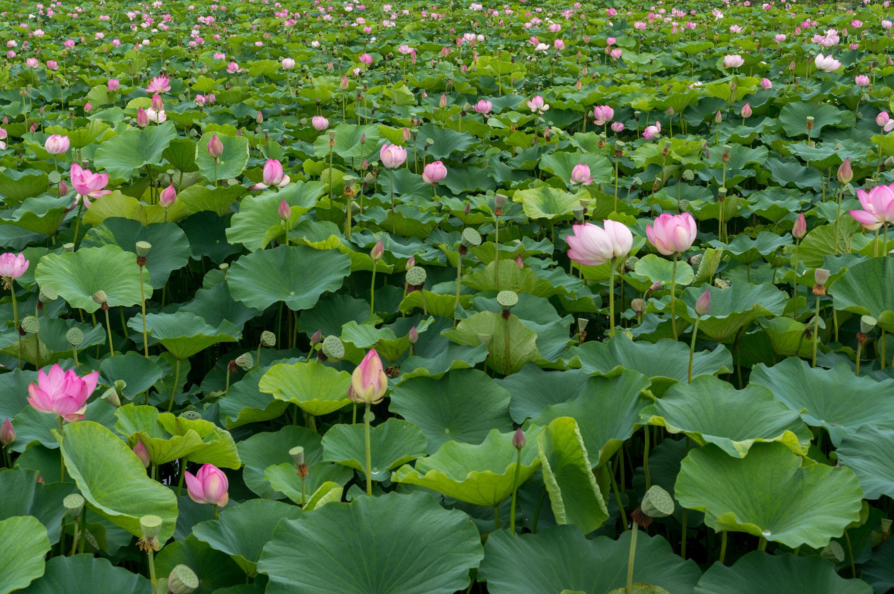

ENFJ 추천 여행지
충청남도 부여

추천 이유
부여는 백제의 역사와 문화를 깊이 있게 느낄 수 있는 여행지입니다. 사람들과 의미 있는 시간을 보내는 것을 중요하게 생각하는 ENFJ에게 역사 유적과 아름다운 자연 풍경을 함께 즐길 수 있는 부여는 특별한 추억을 만들기 좋은 장소입니다.
추천 여행 코스
- 궁남지
- 부여소동공원
- 백제문화단지
- 야간 개장 관람 및 산책
추천 포인트
- 백제 역사와 문화 체험 가능
- 연인·친구와 함께 걷기 좋은 여행지
- 야간 조명이 아름다운 산책 코스
- 조용하고 낭만적인 분위기